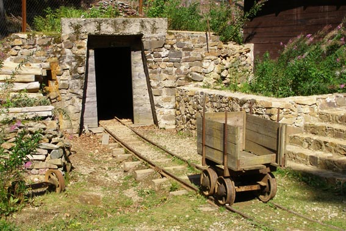
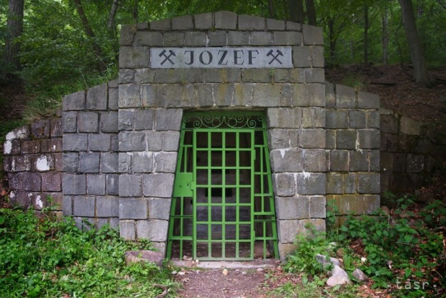
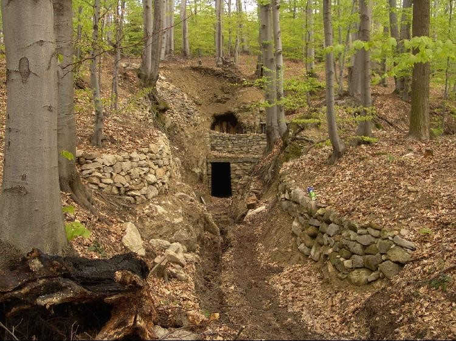

Dubnické opálové baňe
Unikátne Dubnícke opálové bane sa
nachádzajú v strede severnej časti Slanských hôr. Od Prešova sú
vzdialené asi 28 km JV a dostaneme sa k nim cez Solivar, Dulovu Ves,
Kokošovce a Zlatú Baňu. Od Košíc sú vzdialené 35 km SV a najkratšou
cestou sa k nim dostaneme cez Košické Olšany, Rozhanovce, Čižatice,
Kecerovce, Opinú a Červenicu. Od Zlatej Bane je bývalé
administratívne centrum ťažby drahého opálu, teraz opustená osada
Dubník vzdialená asi 5 km a od Červenice asi 3 km. Ložiská drahého
opálu zahŕňajú historické banské revíry, väčšiu a rozsiahlejšiu
Libanku a menšiu Šimonku, vzdialenú približne 2 km severným smerom.
Dubnícke ložiská drahého opálu sú výnimočným fenoménom z
celosvetového hľadiska. Nikde na svete nebol drahý opál ťažený
banským spôsobom v takom veľkom rozsahu, a tak dávno. Aj súčasná
ťažba drahého opálu v Austrálii je zrovnateľná s ťažbou drahého opálu
na Dubníku pred 150 rokmi, keď sa ťažilo viac ako 25 000 ct drahého
opálu ročne.
  
Dubnícky opál
Drahý opál, rovnako ako ostatné druhy obecného opálu, je
hydrogel s kolísavým obsahom vody. Chemický vzorec je SiO2 . n H2O.
Obsah kremeňa v slovenskom drahom opáli kolíše od 89,0 – 93,3 % a
obsah vody od 6,1 – 10,9 %. Opál vzniká z nízkotermálnych
postvulkanických roztokov vyzrážaním gelovitej kremičitej substancie.
Prekrásna a typická farbohra a opalizácia drahého opálu vzniká
interferenciou svetla na rozhraniach submikroskopických vrstvičiek
gelovitých guličiek opálu. Na našich ložiskách vystupuje spoločne s
inými odrodami opálu. Ojedinele uzatvára ihličky antimonitu a drobné
kryštáliky markazitu a pyritu.